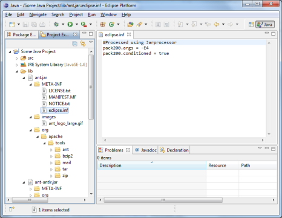
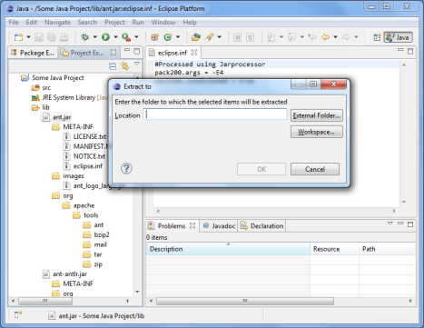

The Archive Utilities extend the Eclipse IDE to view the structure and content and extract zip archive files within the workspace. Zip-compatible archives like JARs, WARs, etc. are of course also supported.
 
Files with zip content can be extracted entirely or partially to locations in the workspace or file system.
In the Project Explorer, zip files can be expanded just like folders to reveal their content. The content of each file within the archive can be viewed in an editor.
Eclipse 3.7 (Indigo) or newer.
Install from this Eclipse software repository: http://rherrmann.github.com/com.codeaffine.archive/repository
From the Eclipse main menu, choose Help -> Install New Software... In the upcoming dialog, enter the above URL in the Work with field.
For files with zip content, an Extract... action is added to all places that work with resources. The Package Explorer for example shows an Extract... menu item if the file is an archive.
In the Project Explorer view, zip files can be expanded just like folders to reveal
their content. Each file within the archive can be viewed in an editor. Right-click the file
to show and choose Open.
If the Project Explorer isn't your primary view to manage development artefacts you can always
press Alt+Shift+W on the current selection to show it in the Project Explorer.
To extract items from the archive, select the items to be extracted and choose Extract... from the context menu. The upcoming dialog asks for a destination location.
As the version number 0.1 suggests, there are still some open ends. Among these are support for Eclipse 3.6, key bindings, an Open with... action, nested archive files, and support for other archive and compression formats (tar, gz, tar.gz, what else?) The full list can be found here.
If you have suggestions for new features or find a bug, please file an issue.
Use of the software for noncommercial purposes is free of charge. If you are going to use the software for any commercial purpose or in any way that is not specifically authorized in the user license agreement, please contact the author.